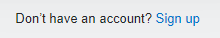
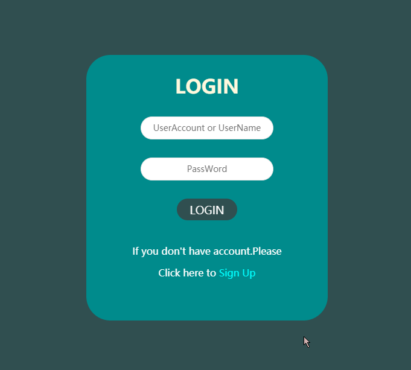
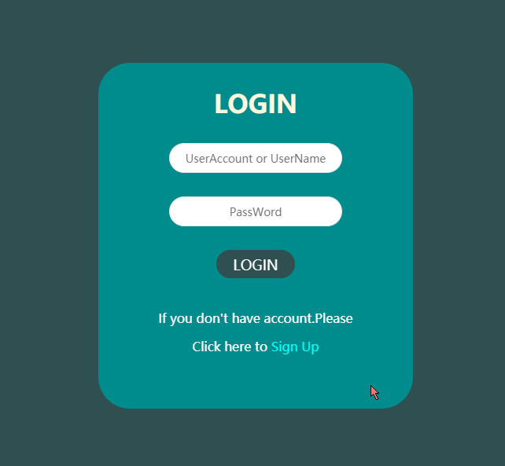

最近在尝试做网盘，使用的技术栈大概是 .net core + MVC + Mysql + Layui，主要目的是通过这个具体的项目，熟悉熟悉 .net core 开发，.net 的未来就是他了！
在完成后端的一部分 建设 之后，我把目光投向了前端——登陆注册，由于这个网盘是用来试手的个人项目，我并不想用曾经用过的制作方式——登录和注册界面分开来做。我试图讲这两个功能合到一个页面上，并且以一种不是很 "Low" 的方式呈现出来。
你也可以认为我只是单纯的懒，不想再多搞一个页面
所以排除了曾经使用过的点击按钮跳出 登录/注册 表单，排除了比较僵硬的使用选项卡切换 登录/注册 之后，我瞄上了 翻转 效果。

看到那个 sign up 和 log in 之后我就想到，拿这两个超链接做点文章或许是不错的选择
用户点击 sign up 之后从登录翻转到注册，点击 log in 从注册翻转到登录
从技术上来说应该是不难的，但是 B 格 看起来立刻就高了不少啊！！！！
具体效果可以直接拉到最下面
Html
<body>
<div class="mainbody middle">
<form class="form-box front">
<div>
<h1>Login</h1>
</div>
<div>
<input class="input-normal" type="text" placeholder="UserAccount" />
<input class="input-normal" type="password" placeholder="PassWord" />
<button class="btn-submit" type="submit">
LOGIN
</button>
</div>
<div>
<p style="margin-top: 40px">If you don't have account.Please</p>
<p>Click here to <a id="signup">Sign Up</a></p>
</div>
</form>
<!-- 对的你没看错，上下两个表单基本上没区别，一个front，一个back -->
<form class="form-box back">
<div>
<h1>Register</h1>
</div>
<div>
<input class="input-normal" type="text" placeholder="UserAccount" />
<input class="input-normal" type="password" placeholder="PassWord" />
<button class="btn-submit" type="submit">
Register
</button>
</div>
<div>
<p style="margin-top: 40px">Have a account ? You can</p>
<p>Click here to <a id="login">Log in</a></p>
</div>
</form>
</div>
</body>Css
body {
/*颜色这个看个人喜好*/
background: darkslategrey;
/*字体这个看个人喜好*/
font-family: sans-serif;
}
/*主要是规定中间表单尺寸，调整到自己觉得好看就行了*/
.mainbody {
height: 440px;
width: 400px;
}
/*居中效果*/
.middle {
/*使左上角对应到父元素的中心*/
top: 50%;
left: 50%;
position: absolute;
/*向左向上偏移50%*/
transform: translate(-50%, -50%);
}
.form-box {
width: 100%;
height: 100%;
margin: auto;
background: darkcyan;
/* 我觉得这个圆角大小刚刚好 */
border-radius: 40px;
}
.input-normal {
width: 220px;
height: 38px;
margin: 30px auto;
padding: 0;
text-align: center;
border-radius: 20px;
outline: none;
display: block;
transition: 0.3s;
border: 1px solid #e6e6e6;
}
.btn-submit {
width: 100px;
height: 36px;
margin: auto;
font-size: 18px;
text-align: center;
color: white;
border-radius: 20px;
display: block;
background: darkslategrey;
transition: 0.3s;
}
.front {
transform: rotateY(0deg);
}
/* 将back旋转180度，背面朝向用户，我这边选y轴的 */
.back {
transform: rotateY(-180deg);
}
.front,
.back {
position: absolute;
/* 然后设置为背面朝向用户时不可见 */
backface-visibility: hidden;
/* 我觉得用linear顺滑一点 */
transition: 0.3s linear;
}
/* 将front旋转180度 */
.middle-flip .front {
transform: rotateY(180deg);
}
/* 将back旋转180度 */
.middle-flip .back {
transform: rotateY(0deg);
}
/* 我调整了一下，感觉还不错的样式，你可以改成其他的好看点的 */
p {
margin: 15px auto;
padding: 0;
font-size: 16px;
color: white;
display: block;
text-align: center;
}
a {
color: aqua;
cursor: pointer;
}js
// 点击sigup触发翻转样式
$("#signup").click(function() {
$(".middle").toggleClass("middle-flip");
});
// 点击login触发翻转样式
$("#login").click(function() {
$(".middle").toggleClass("middle-flip");
});
看起来好像还行的样子啊
可以考虑在 transfrom 后面加点 perspective ，增强立体感
我用的 perspective(600px)

不管你们怎么想，反正我觉得这个效果还是挺绿的